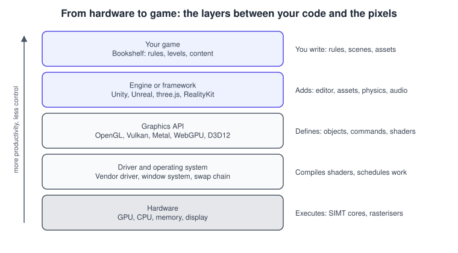
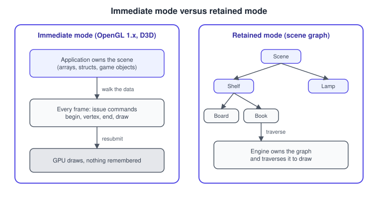
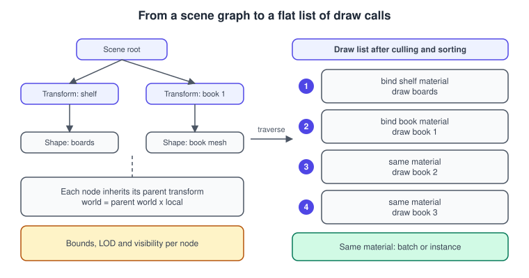
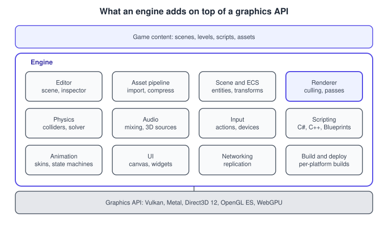

Graphics APIs vs Game Engines
|
This content was generated with the assistance of AI and should be verified against the official documentation before being relied on in production. |
Almost every graphics and game library you will meet sits at one of four levels of abstraction. A rendering API talks to the GPU. A framework wraps one or more APIs behind a friendlier object model. A scene-graph API adds a tree of objects that it draws for you. A game engine adds an editor, asset pipeline, physics, audio, scripting and packaging on top of all of that. Knowing which level a library lives at tells you what it will do for you, what it will never do, and what it costs you in control. This page defines the four levels, explains retained and immediate mode, and uses the running Bookshelf scene (a shelf holding a textured book) to show the same idea at each level.
The facts were checked in November 2026. The versions discussed are OpenGL 4.6, Vulkan 1.4, Metal 4, WebGPU (W3C Candidate Recommendation Draft), three.js r187, Unity 6.3 LTS, Unreal Engine 5.8 and RealityKit on the 2026 Apple operating systems; Java 3D is covered as the historical scene-graph API (the community JogAmp release 1.7.2). The ideas apply on every platform that has a GPU: desktop, mobile, the web and head-mounted displays.
The four levels of abstraction
| Level | What it gives you | What you still write | Examples |
|---|---|---|---|
Rendering API |
Objects that map onto GPU concepts: buffers, textures, shaders, pipelines, command recording and synchronisation. |
The scene, the camera, culling, materials, lighting, the main loop and all content management. |
OpenGL, OpenGL ES, Vulkan, Metal, Direct3D 12, WebGL, WebGPU |
Rendering framework |
A thin object model above an API: meshes, materials, cameras, lights and a ready-made render loop. |
Game rules, asset loading policy, input, physics and audio choices. |
three.js, Babylon.js, Filament, bgfx |
Scene-graph API |
A tree of nodes with transforms, bounds, appearance and behaviours that the library traverses and draws. |
Content and game logic; the library owns traversal, culling and state sorting. |
Java 3D (historical), OpenSceneGraph, RealityKit and SceneKit on Apple platforms |
Game engine |
An editor, asset import and compression, scene and entity systems, renderer, physics, audio, animation, UI, scripting, networking and one-click builds for many platforms. |
Content, gameplay scripts and project-specific systems. |
Unity, Unreal Engine, Godot |
The boundaries are not sharp. three.js is a framework, but its Scene is a scene graph and its examples include an editor.
RealityKit is a scene-graph and entity-component framework that ships inside the Apple operating systems. Unity is an
engine whose rendering layer can be replaced by a Scriptable Render Pipeline you write yourself. Judge a library by what it
takes responsibility for, not by the label on its home page.
What a rendering API is
A rendering API is a contract between your program and the GPU driver. It does not know what a "shelf" or a "book" is. It knows about vertex buffers, textures, samplers, shader programs, render targets and draw commands. You create these objects, fill them with data, describe how they connect, and ask the GPU to draw. The API specification defines exactly which bytes the GPU will read and which pixels it will write, and the driver implements that contract for each vendor’s hardware.

The figure shows the vertical stack. Each layer hides the one below it. A Bookshelf game written in Unity never calls Vulkan directly, yet Unity may use Vulkan to talk to the driver. The same program can therefore run on a different API on a different platform (Direct3D 12 on Windows, Metal on Apple devices, Vulkan or OpenGL ES on Android) without you changing your scripts. That portability is one of the main reasons engines exist.
APIs also differ in how much they leave to you. OpenGL (4.6) and WebGL keep a global state machine and let the driver manage memory and synchronisation. Vulkan 1.4, Metal 4, Direct3D 12 and WebGPU are explicit or semi-explicit: you record command buffers, you describe pipelines up front and, in Vulkan, you manage memory and barriers yourself. The comparison is the subject of Explicit vs Implicit APIs. The API names and the governing bodies are listed in History of Real-Time Graphics.
What an API does not do
-
It does not load files. There is no
loadModelcall in OpenGL, Vulkan or Metal; you parse glTF or OBJ yourself. -
It does not keep a scene. Nothing remembers that the book sits on the shelf; you remember it and submit draws.
-
It does not cull, sort or batch. Sending a draw call for every book, visible or not, costs the same as for a visible one.
-
It does not provide lighting or materials. Blinn-Phong or glTF PBR is a shader you write or import.
-
It does not provide windows or input. Platform glue (GLFW, SDL,
CAMetalLayer, a browser canvas) is separate.
Immediate mode and retained mode
Immediate mode means the application holds the scene and describes it to the graphics library again every frame. The
library draws what it receives and forgets it. Legacy OpenGL 1.x glBegin/glEnd is the classic example. Retained mode
means the library holds a model of the scene (a graph of objects) and the application edits that model; the library
decides when and how to draw it.

The terms are used for two different things, and it helps to keep them apart.
-
At the API level, "immediate mode" in OpenGL 1.x meant sending vertices one call at a time between
glBeginandglEnd. That interface was removed from the OpenGL core profile in 3.1 and 3.2 (2009). Modern APIs submit whole buffers and command lists instead. -
At the library level, "retained mode" means a scene graph or entity world that the library keeps. Modern GPU APIs are all immediate in this second sense: Vulkan, Metal and WebGPU never store your scene.
Here is the same single book triangle strip in both OpenGL styles. The legacy form was valid from OpenGL 1.0 (1992) and is still available in compatibility profiles on some drivers, but it is not available in core profiles or in OpenGL ES 2.0 and later.
/* Legacy immediate mode (OpenGL 1.x / compatibility profile only) */
glClear(GL_COLOR_BUFFER_BIT | GL_DEPTH_BUFFER_BIT);
glBegin(GL_TRIANGLE_STRIP);
glColor3f(0.7f, 0.3f, 0.1f); /* book cover brown */
glVertex3f(-0.10f, -0.15f, 0.0f);
glVertex3f( 0.10f, -0.15f, 0.0f);
glVertex3f(-0.10f, 0.15f, 0.0f);
glVertex3f( 0.10f, 0.15f, 0.0f);
glEnd();Source: OpenGL 2.1 reference: glBegin.
The modern equivalent uploads the vertices once and then issues a single draw. The data lives in a buffer owned by the GPU driver, and a vertex array object records how to read it.
/* Core profile: upload once, draw every frame */
static const float quad[] = { /* x, y, z */
-0.10f, -0.15f, 0.0f,
0.10f, -0.15f, 0.0f,
-0.10f, 0.15f, 0.0f,
0.10f, 0.15f, 0.0f,
};
GLuint vao = 0, vbo = 0;
glGenVertexArrays(1, &vao);
glBindVertexArray(vao);
glGenBuffers(1, &vbo);
glBindBuffer(GL_ARRAY_BUFFER, vbo);
glBufferData(GL_ARRAY_BUFFER, sizeof(quad), quad, GL_STATIC_DRAW);
glVertexAttribPointer(0, 3, GL_FLOAT, GL_FALSE, 3 * sizeof(float), (void *)0);
glEnableVertexAttribArray(0);
/* every frame */
glUseProgram(program); /* a linked vertex + fragment shader */
glBindVertexArray(vao);
glDrawArrays(GL_TRIANGLE_STRIP, 0, 4);The legacy version costs one function call per vertex per frame and cannot be made fast, which is why vendors asked for it to be removed. The modern version still has the application deciding every frame what to draw. A retained-mode library moves that decision into the library.
Frameworks: a thin layer with a scene
A rendering framework hides the API objects behind meshes, materials, cameras and lights, and gives you a render loop. It usually keeps a scene graph but little else. three.js is the standard example for the web: it targets WebGL 2 and, increasingly, WebGPU, so one scene can run on either. The Bookshelf scene in three.js is a handful of lines because the library owns buffers, shaders, uniforms and traversal.
import * as THREE from 'three';
const scene = new THREE.Scene();
const camera = new THREE.PerspectiveCamera(60, window.innerWidth / window.innerHeight, 0.1, 100);
camera.position.set(0, 1.5, 4);
const renderer = new THREE.WebGLRenderer({ antialias: true });
renderer.setSize(window.innerWidth, window.innerHeight);
document.body.appendChild(renderer.domElement);
scene.add(new THREE.AmbientLight(0xffffff, 0.4));
const lamp = new THREE.DirectionalLight(0xffffff, 2);
lamp.position.set(2, 4, 3);
scene.add(lamp);
const shelf = new THREE.Group(); // a scene-graph node
const book = new THREE.Mesh(
new THREE.BoxGeometry(0.2, 0.3, 0.05),
new THREE.MeshStandardMaterial({ color: 0x8b4513, roughness: 0.7 })
);
shelf.add(book);
scene.add(shelf);
renderer.setAnimationLoop((time) => {
book.rotation.y = time / 1000; // the library updates the world matrices
renderer.render(scene, camera); // traverse, cull, sort and draw
});Source: three.js manual: Creating a scene.
The same program written against WebGL 2 directly would run to several hundred lines (buffers, shaders, matrices, the loop). The price of the framework is that you accept its idea of a material, its render order and its update model. When those fit, you save weeks; when they do not, you work around them or drop to the API underneath.
Scene-graph APIs
A scene graph is a directed acyclic graph of nodes. Group nodes carry a transform and children; leaf nodes carry geometry and appearance. A child’s world transform is the product of its ancestors' transforms and its own, so moving the shelf moves every book on it with no further code. The library also stores bounds per node, which it uses for culling and level of detail (LOD).

The figure shows what the library does each frame: it walks the tree, accumulates transforms, discards nodes whose bounds
are outside the view, sorts what remains by material and state, and finally issues the API calls. Everything between the
tree and the API is the value a scene-graph library adds. Selman’s Java 3D Programming and the Java 3D API Specification 1.3
describe exactly this model: BranchGroup and TransformGroup nodes, Shape3D leaves with Appearance and geometry,
bounding volumes for scheduling and culling, and behaviours that run before each frame. Their treatment of the scene graph
and its bounds is still a good way to learn the idea, even though the library they describe is historical.
Java 3D began as a Sun API in the late 1990s and was last released by Sun (1.5.2) in 2008. The community JogAmp project maintains it today: version 1.7.2 runs on JOGL 2.6. The classic spinning-cube program looks like this.
import javax.media.j3d.Alpha;
import javax.media.j3d.BoundingSphere;
import javax.media.j3d.BranchGroup;
import javax.media.j3d.RotationInterpolator;
import javax.media.j3d.TransformGroup;
import com.sun.j3d.utils.geometry.ColorCube;
import com.sun.j3d.utils.universe.SimpleUniverse;
public class SpinningBook {
public static void main(String[] args) {
SimpleUniverse universe = new SimpleUniverse(); // canvas, view, camera
BranchGroup scene = new BranchGroup(); // root of the content branch
TransformGroup spin = new TransformGroup(); // transform node
spin.setCapability(TransformGroup.ALLOW_TRANSFORM_WRITE);
spin.addChild(new ColorCube(0.2)); // leaf node
Alpha alpha = new Alpha(-1, 4000); // loop forever, 4 s per turn
RotationInterpolator rotator = new RotationInterpolator(alpha, spin);
rotator.setSchedulingBounds(new BoundingSphere()); // behaviours need bounds
scene.addChild(spin);
scene.addChild(rotator);
universe.getViewingPlatform().setNominalViewingTransform();
universe.addBranchGraph(scene); // make the branch live
}
}Source: JogAmp Java 3D core repository.
Note how little of this is "rendering". The program builds a graph and attaches a behaviour; the library drives the loop. This is retained mode in its pure form. The same shape appears today in RealityKit, Apple’s entity-component framework, in which you add entities to a scene and the framework renders them. The Apple pages in this repository cover the platform side: Augmented Reality on Apple platforms and visionOS.
import SwiftUI
import RealityKit
struct BookshelfView: View {
var body: some View {
RealityView { content in
let book = ModelEntity(
mesh: .generateBox(size: [0.15, 0.22, 0.04]),
materials: [SimpleMaterial(color: .brown, isMetallic: false)]
)
book.position = [0, 0.1, -0.5]
content.add(book) // RealityKit now owns and renders it
}
}
}Source: Apple: RealityView.
What a game engine adds
An engine includes a rendering layer, but rendering is only one box. The figure lists the subsystems an engine normally adds around the API. Each is a project in itself, and this is the reason teams pick an engine for a game: they avoid writing twelve products before the first level exists.

| Subsystem | What it does | Bookshelf example |
|---|---|---|
Editor |
Visual scene editing, an inspector for properties, play-in-editor and debugging views. |
Drag |
Asset pipeline |
Imports glTF, FBX and textures, compresses to the target platform’s formats, builds bundles and tracks dependencies. |
Converts the cover texture to a GPU-compressed format for each device. |
Scene and entity system |
Hierarchies, components, prefabs, serialisation, streaming of large worlds. |
The shelf is a prefab; each book is an entity with a component. |
Renderer |
Culling, material systems, lighting, shadows, post-processing, render graphs and per-platform API back ends. |
Directional shadow, then glTF PBR materials, with no direct API code. |
Physics and collision |
Rigid bodies, colliders, queries and character controllers. |
Falling books collide with the shelf boards. |
Audio and input |
3D sound sources, mixers, input actions mapped to keyboard, gamepad, touch and XR controllers. |
A page-turn sound when a book is caught. |
Scripting |
C# (Unity), C++ and Blueprints (Unreal), or other languages, with hot reload. |
The "catch the falling books" score and timer logic. |
Animation, UI and networking |
Skeletal animation and state machines, UI canvases, replication and sessions. |
A score label and an optional co-op mode. |
Build and deploy |
Packaging, signing and store submission for each platform. |
One project, an Android build and a web build. |
The engine pages of this section show these subsystems in Unity 6.3 LTS and Unreal Engine 5.8. Engines are also layers of choice: in Unity you pick a render pipeline (URP, or HDRP in maintenance), and in Unreal you pick a rendering feature set per platform, so "the renderer" is not one fixed block.
The engine frame loop is the glue. The pseudocode below shows the order in which an engine typically runs the subsystems for one frame; the exact order and names differ per engine and are documented in each engine’s manual.
frame:
poll input and platform events
fixed update (zero or more steps) : physics, deterministic gameplay
update (once) : scripts, animation, AI
late update (once) : camera follow, final poses
cull visible objects, build draw lists
record commands and submit to the graphics API
present, then pace to the displayThe fixed update and the pacing step are explained in Game Loop and Frame Timing.
The sequence below follows one rendered frame through the layers.
Choosing the level
Pick the lowest level whose cost you can afford, and the highest level whose limits you can accept.
-
Learn how graphics works: start at the API level (OpenGL 4.6 or WebGL 2 for a gentle slope, Vulkan or Metal for the explicit model). The first pages of The Rendering Pipeline name every stage you will configure.
-
A web product with 3D content: a framework such as three.js, with WebGPU as the newer back end where it is available.
-
An app on Apple platforms with 3D or AR content: RealityKit for entity-based scenes, Metal when you need your own renderer.
-
A game: an engine, unless the game’s central feature is the renderer itself.
-
A custom renderer, middleware or a research prototype: the API, with a small helper library for windows and math.
A fuller decision tree lives in Choosing an API or Engine.
How the six libraries of this section fit
| Library | Level | Notes at the baseline of November 2026 |
|---|---|---|
OpenGL 4.6, OpenGL ES 3.2 |
Rendering API, state-machine style |
Frozen core specification; extensions continue; deprecated on Apple platforms since 2018; Android moves OpenGL ES onto ANGLE. |
WebGL 2, three.js r187, WebGPU |
API and framework for the browser |
WebGPU is a W3C Candidate Recommendation Draft shipping in Chrome and Edge 113 and later, Firefox 141 and later on Windows, and Safari 26. |
Metal 4 |
Rendering API for Apple platforms |
Metal 4 requires an A14 or M1 GPU or later. |
Vulkan 1.4 |
Explicit rendering API |
Cross-platform except Apple, where it is layered over Metal (MoltenVK, KosmicKrisp). |
Unity 6.3 LTS |
Engine with a C# scripting layer |
URP is the standard pipeline; the Built-in Render Pipeline is deprecated. |
Unreal Engine 5.8 |
Engine with C++ and Blueprints |
Nanite, Lumen and Enhanced Input are default features. |
Common mistakes
-
Comparing an API and an engine as if they were rivals. "Vulkan or Unity?" is a category error: Unity may use Vulkan. Compare libraries at the same level.
-
Expecting the API to manage the scene. A draw loop that walks ten thousand objects and issues one draw each is the application’s job in OpenGL and Vulkan.
-
Using a scene graph as the only data structure. Deep trees with virtual calls per node become a bottleneck at hundreds of thousands of objects; engines therefore move to flat, data-oriented layouts (see Entity Component System).
-
Picking an engine for a tiny visualisation. Packaging a full engine to show one rotating model is heavy; a framework or the API alone is smaller and faster to load.
-
Writing an engine by accident. A project that starts as "just a renderer" and grows an asset system, a scene format and a scripting layer has become an engine without the budget for one.
-
Mixing immediate-mode calls into core-profile code.
glBegincalls fail with an invalid-operation error in a core profile and do not exist in OpenGL ES 2.0 or later.
Performance notes
-
The cost of abstraction is almost always CPU time, not GPU time. A scene-graph traversal, a generic material system or a script per object all run on the CPU before a single triangle is drawn.
-
Draw-call count is the usual metric. One draw per book for 5,000 books is expensive in OpenGL or WebGL; instancing, or a single indirect or multi-draw call, collapses it. Engines batch and instance for you where materials match.
-
Retained mode enables optimisation (sorting, culling, batching) that immediate mode leaves to you. A good framework does it by default; a naive one does not.
-
Modern explicit APIs reduce driver overhead per call but move scheduling and synchronisation cost to the application; an engine usually does that work better than a first renderer does.
Where the books are outdated
The two scene-graph books that inform this page, Selman’s Java 3D Programming (Manning, 2002) and Sun’s Java 3D API Specification version 1.3 (2002), are valuable for the retained-mode model and still explain scene-graph structure well. Their platform statements are no longer current.
| Statement in the books | Situation in 2026 |
|---|---|
Java 3D 1.2.1 or 1.3 on JDK 1.3, Windows 98, NT or 2000 |
Java 3D is maintained by the JogAmp community; release 1.7.2 runs on JOGL 2.6 (last release September 2024). Sun’s final build, 1.5.2, dates from 2008. |
GL4Java as the Java binding for OpenGL |
GL4Java is defunct. JOGL (JogAmp) and LWJGL are the maintained Java bindings. |
Deploying Java 3D inside applets through the Java Plug-in |
Applets were deprecated in JDK 9 (JEP 289), the browser plug-in was removed in JDK 11, and the Applet API is deprecated for removal (JEP 398). Deploy desktop applications or run on the web with WebGL or WebGPU. |
A scene graph as the main way to write a 3D program |
Engines and frameworks still offer one, but high-performance engines use flat entity-component layouts internally. |
The general cross-cutting changes since those books appeared are collected on the section’s history page, History of Real-Time Graphics.
Recent changes
-
WebGPU became available in Chrome and Edge 113 (May 2023), in Safari 26 (2025) and in Firefox 141 on Windows, giving the web a modern explicit API next to WebGL 2.
-
Vulkan 1.4 (December 2024) made many formerly optional features mandatory, and the Khronos Slang Initiative (November 2024) adopted a shading language that targets several back ends.
-
Unity 6 (October 2024) moved the standard pipeline to URP with a Render Graph and deprecated the Built-in Render Pipeline; Unreal Engine 5 stabilised Nanite and Lumen as the default high-end path.
-
Apple’s Metal 4 (2025) and the 2026 OS releases added a new command model and deprecated older managed-storage and Intel GPU paths; OpenGL has been deprecated on Apple platforms since 2018.
See it in
OpenGL: OpenGL in 2026; WebGL: three.js: Getting Started; Metal: SwiftUI Shaders and RealityKit Interop; Vulkan: Instances, the Loader and Layers; Unity: Getting Started: Hub and Editor; Unreal Engine: Editor Tour.
References
-
Khronos: OpenGL and OpenGL Wiki: Rendering Pipeline Overview
-
Daniel Selman, Java 3D Programming (Manning, 2002): publisher page
-
Sun Microsystems, The Java 3D API Specification, version 1.3 (2002): see the JogAmp project